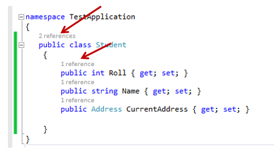

From C# 6.0 onwards, use read-only (getter-only) auto property for conciseness and readability for your immutable types.
What and Why
“Pure functions” and “immutability” are probably what you heard most from functional programming fans.
So what I like most about functional programming is it allows you to better reason about your program, by seeing how data flow through, and without worrying about unwanted state transfers in your objects when calling some method. The functional paradigm is different from Object-Oriented paradigm which tries to encapsulate the “moving parts” in your system; it minimizes them.
Immutability of objects is required in functional programming. It guarantees no side-effects created when passing them into pure functions; pure functions guarantee same return value for the same input.
Examples
Moving on, I will demonstrate three ways in C# to create an immutable Customer class with attributes name, age, and email.
Public read-only fields
The first example defines the attributes using read-only field. The drawback of this way is that fields are exposed to outside the class, which is discouraged in this most-voted answer on StackOverflow.
Fields should (almost always) be kept private to a class and accessed via get and set properties.
Apart from this, it ensures immutability and is thread-safe.
public class Customer |
As a side note, this currently could be a small reason that discourages using of fields: Visual Studio CodeLens does not show references count on both public and private fields as it does on auto-properties.

Auto-properties with private setter
The second example uses auto-property by making setter property private. It ensures external immutability where attributes cannot be changed from outside through setters. But it does allow changes from object itself (eg. UpdateEmail method).
It does not enforce overall immutability for the type.
public class Customer |
Getter-only auto-properties (C# 6)
New feature in C# 6 (released quite a while actually) allows declaring auto-property without a setter. In this way, the underlying field will be read-only and can be initialized in the constructor.
public class Customer |
If you are using C# 6 and above, it should be the preferred way for declaring immutable types, as it makes you write less code and gives the immutability you will need.